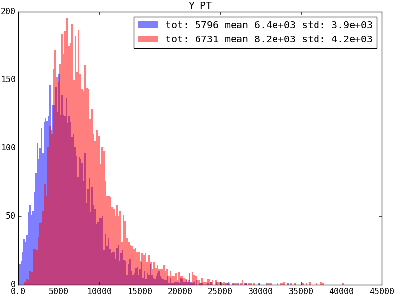
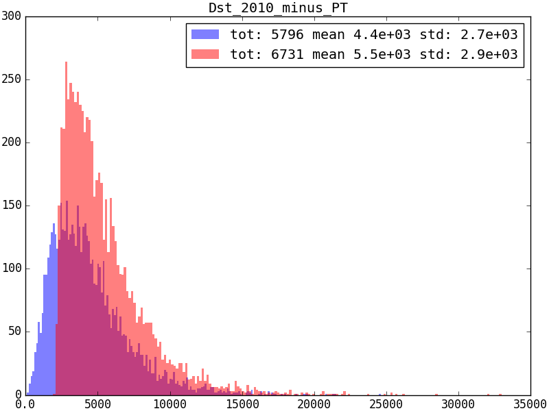
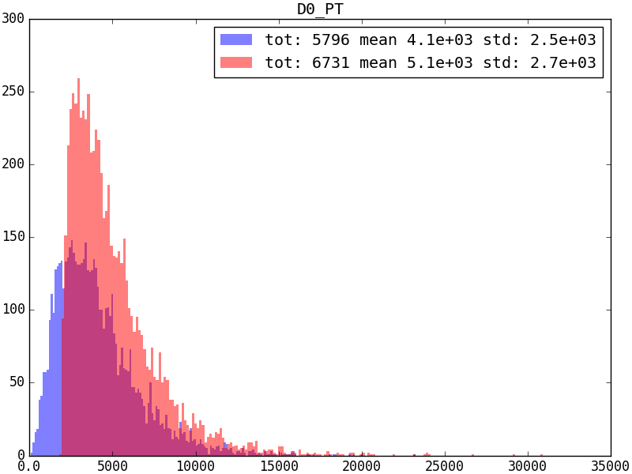
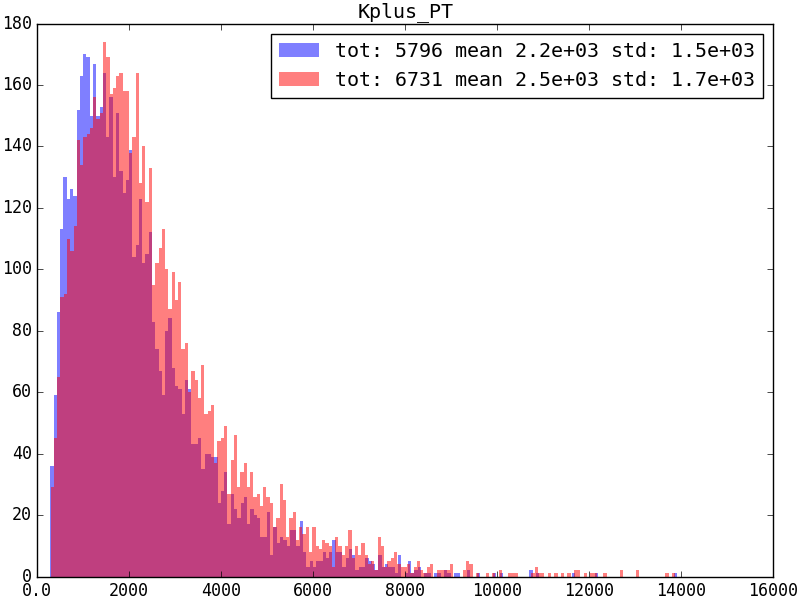
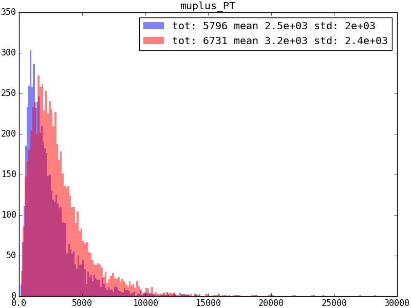
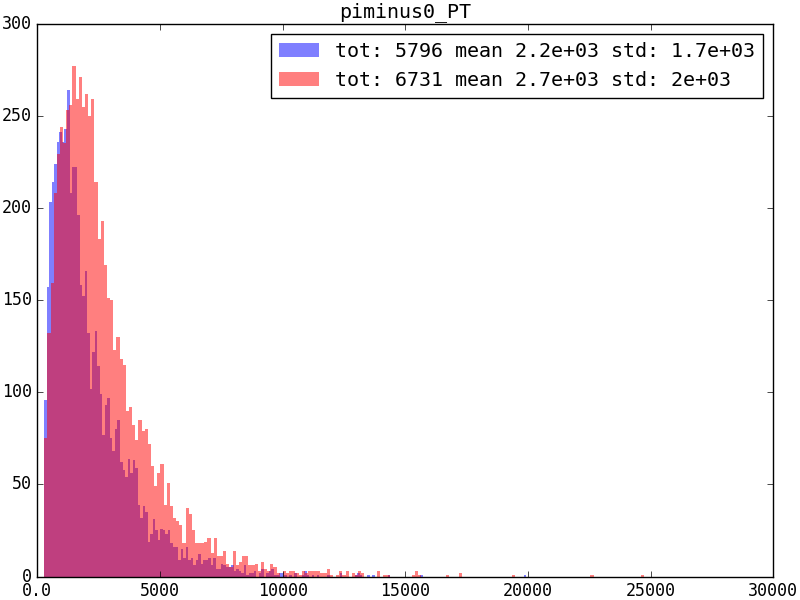

\(R(D^*)\) cutflow detail
Comparison between physical variables
For now, we focus on \(P_T\) of all reconstructed particles, generated with cocktail MC.
Y_PT

Dst_PT

D0_PT

Kplus_PT

muplus_PT

piminus_PT

piminus0_PT

Comparison between run 1 and run 2 individual
| cut name | run 1 yield | run 2 yield | run 1 efficiency | run 2 efficiency | double ratio |
|---|---|---|---|---|---|
| After DaVinci | 5796 | 6731 | - | - | - |
| \(D^*\) L0Hadron TOS | 1205 | 1628 | 0.2079±0.0054 | 0.2419±0.0053 | 1.163±0.040 |
| \(\Upsilon(4s)\) L0Electron TIS | 387 | 711 | 0.0668±0.0034 | 0.1056±0.0039 | 1.58±0.10 |
| \(\Upsilon(4s)\) L0Hadron TIS | 1245 | 1560 | 0.2148±0.0055 | 0.2318±0.0052 | 1.079±0.037 |
| \(\Upsilon(4s)\) L0Muon TIS | 565 | 789 | 0.0975±0.0040 | 0.1172±0.0040 | 1.202±0.065 |
| \(\Upsilon(4s)\) L0Photon TIS | 260 | 277 | 0.0449±0.0029 | 0.0412±0.0026 | 0.917±0.082 |
| \(\Upsilon(4s)\) L0Global TIS | 1931 | 2714 | 0.3332±0.0063 | 0.4032±0.0060 | 1.210±0.029 |
| \(D^*\) L0Hadron TOS+\(\Upsilon(4s)\) L0Electron TIS | 113 | 175 | 0.0938±0.0091 | 0.1075±0.0082 | 1.15±0.14 |
| \(D^*\) L0Hadron TOS+\(\Upsilon(4s)\) L0Hadron TIS | 330 | 355 | 0.274±0.013 | 0.218±0.011 | 0.796±0.055 |
| \(D^*\) L0Hadron TOS+\(\Upsilon(4s)\) L0Muon TIS | 135 | 147 | 0.1120±0.0098 | 0.0903±0.0076 | 0.806±0.098 |
| \(D^*\) L0Hadron TOS+\(\Upsilon(4s)\) L0Photon TIS | 68 | 72 | 0.0564±0.0074 | 0.0442±0.0057 | 0.78±0.14 |
| \(D^*\) L0Hadron TOS+\(\Upsilon(4s)\) L0Global TIS | 489 | 578 | 0.406±0.015 | 0.355±0.012 | 0.875±0.043 |
| Total ratio | - | - | 0.0844±0.0038 | 0.0859±0.0035 | 1.018±0.062 |
Note
Only lines present in both runs are considered here.
Run 1 detail
Marginal impact
| cut name | yield | efficiency |
|---|---|---|
| After DaVinci | 5796 | - |
| \(D^*\) L0Hadron TOS | 1205 | 0.208+/-0.005 |
| \(D^*\) L0Hadron TOS+\(\Upsilon(4s)\) L0Electron TIS | 113 | 0.094+/-0.009 |
| \(D^*\) L0Hadron TOS+\(\Upsilon(4s)\) L0Electron TIS+\(\Upsilon(4s)\) L0ElectronHi TIS | 35 | 0.029+/-0.006 |
| \(D^*\) L0Hadron TOS+\(\Upsilon(4s)\) L0Electron TIS+\(\Upsilon(4s)\) L0Hadron TIS | 65 | 0.054+/-0.007 |
| \(D^*\) L0Hadron TOS+\(\Upsilon(4s)\) L0Electron TIS+\(\Upsilon(4s)\) L0HighSumETJet TIS | 0 | 0.0000+/-0.0015 |
| \(D^*\) L0Hadron TOS+\(\Upsilon(4s)\) L0Electron TIS+\(\Upsilon(4s)\) L0Muon TIS | 16 | 0.013+/-0.004 |
| \(D^*\) L0Hadron TOS+\(\Upsilon(4s)\) L0Electron TIS+\(\Upsilon(4s)\) L0NoPVFlag TIS | 0 | 0.0000+/-0.0015 |
| \(D^*\) L0Hadron TOS+\(\Upsilon(4s)\) L0Electron TIS+\(\Upsilon(4s)\) L0Photon TIS | 17 | 0.014+/-0.004 |
| \(D^*\) L0Hadron TOS+\(\Upsilon(4s)\) L0Electron TIS+\(\Upsilon(4s)\) L0PhotonHi TIS | 10 | 0.0083+/-0.0035 |
| \(D^*\) L0Hadron TOS+\(\Upsilon(4s)\) L0Electron TIS+\(\Upsilon(4s)\) L0Global TIS | 113 | 0.094+/-0.009 |
| \(D^*\) L0Hadron TOS+\(\Upsilon(4s)\) L0ElectronHi TIS | 35 | 0.029+/-0.006 |
| \(D^*\) L0Hadron TOS+\(\Upsilon(4s)\) L0ElectronHi TIS+\(\Upsilon(4s)\) L0Electron TIS | 35 | 0.029+/-0.006 |
| \(D^*\) L0Hadron TOS+\(\Upsilon(4s)\) L0ElectronHi TIS+\(\Upsilon(4s)\) L0Hadron TIS | 22 | 0.018+/-0.005 |
| \(D^*\) L0Hadron TOS+\(\Upsilon(4s)\) L0ElectronHi TIS+\(\Upsilon(4s)\) L0HighSumETJet TIS | 0 | 0.0000+/-0.0015 |
| \(D^*\) L0Hadron TOS+\(\Upsilon(4s)\) L0ElectronHi TIS+\(\Upsilon(4s)\) L0Muon TIS | 4 | 0.0033+/-0.0026 |
| \(D^*\) L0Hadron TOS+\(\Upsilon(4s)\) L0ElectronHi TIS+\(\Upsilon(4s)\) L0NoPVFlag TIS | 0 | 0.0000+/-0.0015 |
| \(D^*\) L0Hadron TOS+\(\Upsilon(4s)\) L0ElectronHi TIS+\(\Upsilon(4s)\) L0Photon TIS | 6 | 0.0050+/-0.0029 |
| \(D^*\) L0Hadron TOS+\(\Upsilon(4s)\) L0ElectronHi TIS+\(\Upsilon(4s)\) L0PhotonHi TIS | 4 | 0.0033+/-0.0026 |
| \(D^*\) L0Hadron TOS+\(\Upsilon(4s)\) L0ElectronHi TIS+\(\Upsilon(4s)\) L0Global TIS | 35 | 0.029+/-0.006 |
| \(D^*\) L0Hadron TOS+\(\Upsilon(4s)\) L0Hadron TIS | 330 | 0.274+/-0.013 |
| \(D^*\) L0Hadron TOS+\(\Upsilon(4s)\) L0Hadron TIS+\(\Upsilon(4s)\) L0Electron TIS | 65 | 0.054+/-0.007 |
| \(D^*\) L0Hadron TOS+\(\Upsilon(4s)\) L0Hadron TIS+\(\Upsilon(4s)\) L0ElectronHi TIS | 22 | 0.018+/-0.005 |
| \(D^*\) L0Hadron TOS+\(\Upsilon(4s)\) L0Hadron TIS+\(\Upsilon(4s)\) L0HighSumETJet TIS | 0 | 0.0000+/-0.0015 |
| \(D^*\) L0Hadron TOS+\(\Upsilon(4s)\) L0Hadron TIS+\(\Upsilon(4s)\) L0Muon TIS | 40 | 0.033+/-0.006 |
| \(D^*\) L0Hadron TOS+\(\Upsilon(4s)\) L0Hadron TIS+\(\Upsilon(4s)\) L0NoPVFlag TIS | 0 | 0.0000+/-0.0015 |
| \(D^*\) L0Hadron TOS+\(\Upsilon(4s)\) L0Hadron TIS+\(\Upsilon(4s)\) L0Photon TIS | 36 | 0.030+/-0.006 |
| \(D^*\) L0Hadron TOS+\(\Upsilon(4s)\) L0Hadron TIS+\(\Upsilon(4s)\) L0PhotonHi TIS | 12 | 0.010+/-0.004 |
| \(D^*\) L0Hadron TOS+\(\Upsilon(4s)\) L0Hadron TIS+\(\Upsilon(4s)\) L0Global TIS | 330 | 0.274+/-0.013 |
| \(D^*\) L0Hadron TOS+\(\Upsilon(4s)\) L0HighSumETJet TIS | 0 | 0.0000+/-0.0015 |
| \(D^*\) L0Hadron TOS+\(\Upsilon(4s)\) L0HighSumETJet TIS+\(\Upsilon(4s)\) L0Electron TIS | 0 | 0.0000+/-0.0015 |
| \(D^*\) L0Hadron TOS+\(\Upsilon(4s)\) L0HighSumETJet TIS+\(\Upsilon(4s)\) L0ElectronHi TIS | 0 | 0.0000+/-0.0015 |
| \(D^*\) L0Hadron TOS+\(\Upsilon(4s)\) L0HighSumETJet TIS+\(\Upsilon(4s)\) L0Hadron TIS | 0 | 0.0000+/-0.0015 |
| \(D^*\) L0Hadron TOS+\(\Upsilon(4s)\) L0HighSumETJet TIS+\(\Upsilon(4s)\) L0Muon TIS | 0 | 0.0000+/-0.0015 |
| \(D^*\) L0Hadron TOS+\(\Upsilon(4s)\) L0HighSumETJet TIS+\(\Upsilon(4s)\) L0NoPVFlag TIS | 0 | 0.0000+/-0.0015 |
| \(D^*\) L0Hadron TOS+\(\Upsilon(4s)\) L0HighSumETJet TIS+\(\Upsilon(4s)\) L0Photon TIS | 0 | 0.0000+/-0.0015 |
| \(D^*\) L0Hadron TOS+\(\Upsilon(4s)\) L0HighSumETJet TIS+\(\Upsilon(4s)\) L0PhotonHi TIS | 0 | 0.0000+/-0.0015 |
| \(D^*\) L0Hadron TOS+\(\Upsilon(4s)\) L0HighSumETJet TIS+\(\Upsilon(4s)\) L0Global TIS | 0 | 0.0000+/-0.0015 |
| \(D^*\) L0Hadron TOS+\(\Upsilon(4s)\) L0Muon TIS | 135 | 0.112+/-0.010 |
| \(D^*\) L0Hadron TOS+\(\Upsilon(4s)\) L0Muon TIS+\(\Upsilon(4s)\) L0Electron TIS | 16 | 0.013+/-0.004 |
| \(D^*\) L0Hadron TOS+\(\Upsilon(4s)\) L0Muon TIS+\(\Upsilon(4s)\) L0ElectronHi TIS | 4 | 0.0033+/-0.0026 |
| \(D^*\) L0Hadron TOS+\(\Upsilon(4s)\) L0Muon TIS+\(\Upsilon(4s)\) L0Hadron TIS | 40 | 0.033+/-0.006 |
| \(D^*\) L0Hadron TOS+\(\Upsilon(4s)\) L0Muon TIS+\(\Upsilon(4s)\) L0HighSumETJet TIS | 0 | 0.0000+/-0.0015 |
| \(D^*\) L0Hadron TOS+\(\Upsilon(4s)\) L0Muon TIS+\(\Upsilon(4s)\) L0NoPVFlag TIS | 0 | 0.0000+/-0.0015 |
| \(D^*\) L0Hadron TOS+\(\Upsilon(4s)\) L0Muon TIS+\(\Upsilon(4s)\) L0Photon TIS | 7 | 0.0058+/-0.0031 |
| \(D^*\) L0Hadron TOS+\(\Upsilon(4s)\) L0Muon TIS+\(\Upsilon(4s)\) L0PhotonHi TIS | 3 | 0.0025+/-0.0024 |
| \(D^*\) L0Hadron TOS+\(\Upsilon(4s)\) L0Muon TIS+\(\Upsilon(4s)\) L0Global TIS | 135 | 0.112+/-0.010 |
| \(D^*\) L0Hadron TOS+\(\Upsilon(4s)\) L0NoPVFlag TIS | 0 | 0.0000+/-0.0015 |
| \(D^*\) L0Hadron TOS+\(\Upsilon(4s)\) L0NoPVFlag TIS+\(\Upsilon(4s)\) L0Electron TIS | 0 | 0.0000+/-0.0015 |
| \(D^*\) L0Hadron TOS+\(\Upsilon(4s)\) L0NoPVFlag TIS+\(\Upsilon(4s)\) L0ElectronHi TIS | 0 | 0.0000+/-0.0015 |
| \(D^*\) L0Hadron TOS+\(\Upsilon(4s)\) L0NoPVFlag TIS+\(\Upsilon(4s)\) L0Hadron TIS | 0 | 0.0000+/-0.0015 |
| \(D^*\) L0Hadron TOS+\(\Upsilon(4s)\) L0NoPVFlag TIS+\(\Upsilon(4s)\) L0HighSumETJet TIS | 0 | 0.0000+/-0.0015 |
| \(D^*\) L0Hadron TOS+\(\Upsilon(4s)\) L0NoPVFlag TIS+\(\Upsilon(4s)\) L0Muon TIS | 0 | 0.0000+/-0.0015 |
| \(D^*\) L0Hadron TOS+\(\Upsilon(4s)\) L0NoPVFlag TIS+\(\Upsilon(4s)\) L0Photon TIS | 0 | 0.0000+/-0.0015 |
| \(D^*\) L0Hadron TOS+\(\Upsilon(4s)\) L0NoPVFlag TIS+\(\Upsilon(4s)\) L0PhotonHi TIS | 0 | 0.0000+/-0.0015 |
| \(D^*\) L0Hadron TOS+\(\Upsilon(4s)\) L0NoPVFlag TIS+\(\Upsilon(4s)\) L0Global TIS | 0 | 0.0000+/-0.0015 |
| \(D^*\) L0Hadron TOS+\(\Upsilon(4s)\) L0Photon TIS | 68 | 0.056+/-0.007 |
| \(D^*\) L0Hadron TOS+\(\Upsilon(4s)\) L0Photon TIS+\(\Upsilon(4s)\) L0Electron TIS | 17 | 0.014+/-0.004 |
| \(D^*\) L0Hadron TOS+\(\Upsilon(4s)\) L0Photon TIS+\(\Upsilon(4s)\) L0ElectronHi TIS | 6 | 0.0050+/-0.0029 |
| \(D^*\) L0Hadron TOS+\(\Upsilon(4s)\) L0Photon TIS+\(\Upsilon(4s)\) L0Hadron TIS | 36 | 0.030+/-0.006 |
| \(D^*\) L0Hadron TOS+\(\Upsilon(4s)\) L0Photon TIS+\(\Upsilon(4s)\) L0HighSumETJet TIS | 0 | 0.0000+/-0.0015 |
| \(D^*\) L0Hadron TOS+\(\Upsilon(4s)\) L0Photon TIS+\(\Upsilon(4s)\) L0Muon TIS | 7 | 0.0058+/-0.0031 |
| \(D^*\) L0Hadron TOS+\(\Upsilon(4s)\) L0Photon TIS+\(\Upsilon(4s)\) L0NoPVFlag TIS | 0 | 0.0000+/-0.0015 |
| \(D^*\) L0Hadron TOS+\(\Upsilon(4s)\) L0Photon TIS+\(\Upsilon(4s)\) L0PhotonHi TIS | 19 | 0.016+/-0.004 |
| \(D^*\) L0Hadron TOS+\(\Upsilon(4s)\) L0Photon TIS+\(\Upsilon(4s)\) L0Global TIS | 68 | 0.056+/-0.007 |
| \(D^*\) L0Hadron TOS+\(\Upsilon(4s)\) L0PhotonHi TIS | 19 | 0.016+/-0.004 |
| \(D^*\) L0Hadron TOS+\(\Upsilon(4s)\) L0PhotonHi TIS+\(\Upsilon(4s)\) L0Electron TIS | 10 | 0.0083+/-0.0035 |
| \(D^*\) L0Hadron TOS+\(\Upsilon(4s)\) L0PhotonHi TIS+\(\Upsilon(4s)\) L0ElectronHi TIS | 4 | 0.0033+/-0.0026 |
| \(D^*\) L0Hadron TOS+\(\Upsilon(4s)\) L0PhotonHi TIS+\(\Upsilon(4s)\) L0Hadron TIS | 12 | 0.010+/-0.004 |
| \(D^*\) L0Hadron TOS+\(\Upsilon(4s)\) L0PhotonHi TIS+\(\Upsilon(4s)\) L0HighSumETJet TIS | 0 | 0.0000+/-0.0015 |
| \(D^*\) L0Hadron TOS+\(\Upsilon(4s)\) L0PhotonHi TIS+\(\Upsilon(4s)\) L0Muon TIS | 3 | 0.0025+/-0.0024 |
| \(D^*\) L0Hadron TOS+\(\Upsilon(4s)\) L0PhotonHi TIS+\(\Upsilon(4s)\) L0NoPVFlag TIS | 0 | 0.0000+/-0.0015 |
| \(D^*\) L0Hadron TOS+\(\Upsilon(4s)\) L0PhotonHi TIS+\(\Upsilon(4s)\) L0Photon TIS | 19 | 0.016+/-0.004 |
| \(D^*\) L0Hadron TOS+\(\Upsilon(4s)\) L0PhotonHi TIS+\(\Upsilon(4s)\) L0Global TIS | 19 | 0.016+/-0.004 |
| \(D^*\) L0Hadron TOS+\(\Upsilon(4s)\) L0Global TIS | 489 | 0.406+/-0.015 |
Individual impact
| cut name | yield | efficiency |
|---|---|---|
| After DaVinci | 5796 | - |
| \(D^*\) L0Hadron TOS | 1205 | 0.208+/-0.005 |
| \(\Upsilon(4s)\) L0Electron TIS | 387 | 0.0668+/-0.0034 |
| \(\Upsilon(4s)\) L0ElectronHi TIS | 94 | 0.0162+/-0.0018 |
| \(\Upsilon(4s)\) L0Hadron TIS | 1245 | 0.215+/-0.006 |
| \(\Upsilon(4s)\) L0HighSumETJet TIS | 0 | 0.00000+/-0.00032 |
| \(\Upsilon(4s)\) L0Muon TIS | 565 | 0.097+/-0.004 |
| \(\Upsilon(4s)\) L0NoPVFlag TIS | 0 | 0.00000+/-0.00032 |
| \(\Upsilon(4s)\) L0Photon TIS | 260 | 0.0449+/-0.0029 |
| \(\Upsilon(4s)\) L0PhotonHi TIS | 63 | 0.0109+/-0.0015 |
| \(\Upsilon(4s)\) L0Global TIS | 1931 | 0.333+/-0.006 |
| \(D^*\) L0Hadron TOS+\(\Upsilon(4s)\) L0Electron TIS | 113 | 0.094+/-0.009 |
| \(D^*\) L0Hadron TOS+\(\Upsilon(4s)\) L0ElectronHi TIS | 35 | 0.029+/-0.006 |
| \(D^*\) L0Hadron TOS+\(\Upsilon(4s)\) L0Hadron TIS | 330 | 0.274+/-0.013 |
| \(D^*\) L0Hadron TOS+\(\Upsilon(4s)\) L0HighSumETJet TIS | 0 | 0.0000+/-0.0015 |
| \(D^*\) L0Hadron TOS+\(\Upsilon(4s)\) L0Muon TIS | 135 | 0.112+/-0.010 |
| \(D^*\) L0Hadron TOS+\(\Upsilon(4s)\) L0NoPVFlag TIS | 0 | 0.0000+/-0.0015 |
| \(D^*\) L0Hadron TOS+\(\Upsilon(4s)\) L0Photon TIS | 68 | 0.056+/-0.007 |
| \(D^*\) L0Hadron TOS+\(\Upsilon(4s)\) L0PhotonHi TIS | 19 | 0.016+/-0.004 |
| \(D^*\) L0Hadron TOS+\(\Upsilon(4s)\) L0Global TIS | 489 | 0.406+/-0.015 |
Run 2 detail
Marginal impact
| cut name | yield | efficiency |
|---|---|---|
| After DaVinci | 6731 | - |
| \(D^*\) L0Hadron TOS | 1628 | 0.242+/-0.005 |
| \(D^*\) L0Hadron TOS+\(\Upsilon(4s)\) L0DiMuon TIS | 36 | 0.022+/-0.004 |
| \(D^*\) L0Hadron TOS+\(\Upsilon(4s)\) L0DiMuon TIS+\(\Upsilon(4s)\) L0Electron TIS | 6 | 0.0037+/-0.0022 |
| \(D^*\) L0Hadron TOS+\(\Upsilon(4s)\) L0DiMuon TIS+\(\Upsilon(4s)\) L0Hadron TIS | 8 | 0.0049+/-0.0024 |
| \(D^*\) L0Hadron TOS+\(\Upsilon(4s)\) L0DiMuon TIS+\(\Upsilon(4s)\) L0JetEl TIS | 0 | 0.0000+/-0.0011 |
| \(D^*\) L0Hadron TOS+\(\Upsilon(4s)\) L0DiMuon TIS+\(\Upsilon(4s)\) L0JetPh TIS | 0 | 0.0000+/-0.0011 |
| \(D^*\) L0Hadron TOS+\(\Upsilon(4s)\) L0DiMuon TIS+\(\Upsilon(4s)\) L0Muon TIS | 35 | 0.021+/-0.004 |
| \(D^*\) L0Hadron TOS+\(\Upsilon(4s)\) L0DiMuon TIS+\(\Upsilon(4s)\) L0MuonEW TIS | 9 | 0.0055+/-0.0025 |
| \(D^*\) L0Hadron TOS+\(\Upsilon(4s)\) L0DiMuon TIS+\(\Upsilon(4s)\) L0Photon TIS | 1 | 0.0006+/-0.0014 |
| \(D^*\) L0Hadron TOS+\(\Upsilon(4s)\) L0DiMuon TIS+\(\Upsilon(4s)\) L0Global TIS | 36 | 0.022+/-0.004 |
| \(D^*\) L0Hadron TOS+\(\Upsilon(4s)\) L0Electron TIS | 175 | 0.107+/-0.008 |
| \(D^*\) L0Hadron TOS+\(\Upsilon(4s)\) L0Electron TIS+\(\Upsilon(4s)\) L0DiMuon TIS | 6 | 0.0037+/-0.0022 |
| \(D^*\) L0Hadron TOS+\(\Upsilon(4s)\) L0Electron TIS+\(\Upsilon(4s)\) L0Hadron TIS | 85 | 0.052+/-0.006 |
| \(D^*\) L0Hadron TOS+\(\Upsilon(4s)\) L0Electron TIS+\(\Upsilon(4s)\) L0JetEl TIS | 8 | 0.0049+/-0.0024 |
| \(D^*\) L0Hadron TOS+\(\Upsilon(4s)\) L0Electron TIS+\(\Upsilon(4s)\) L0JetPh TIS | 1 | 0.0006+/-0.0014 |
| \(D^*\) L0Hadron TOS+\(\Upsilon(4s)\) L0Electron TIS+\(\Upsilon(4s)\) L0Muon TIS | 16 | 0.0098+/-0.0031 |
| \(D^*\) L0Hadron TOS+\(\Upsilon(4s)\) L0Electron TIS+\(\Upsilon(4s)\) L0MuonEW TIS | 8 | 0.0049+/-0.0024 |
| \(D^*\) L0Hadron TOS+\(\Upsilon(4s)\) L0Electron TIS+\(\Upsilon(4s)\) L0Photon TIS | 15 | 0.0092+/-0.0030 |
| \(D^*\) L0Hadron TOS+\(\Upsilon(4s)\) L0Electron TIS+\(\Upsilon(4s)\) L0Global TIS | 175 | 0.107+/-0.008 |
| \(D^*\) L0Hadron TOS+\(\Upsilon(4s)\) L0Hadron TIS | 355 | 0.218+/-0.011 |
| \(D^*\) L0Hadron TOS+\(\Upsilon(4s)\) L0Hadron TIS+\(\Upsilon(4s)\) L0DiMuon TIS | 8 | 0.0049+/-0.0024 |
| \(D^*\) L0Hadron TOS+\(\Upsilon(4s)\) L0Hadron TIS+\(\Upsilon(4s)\) L0Electron TIS | 85 | 0.052+/-0.006 |
| \(D^*\) L0Hadron TOS+\(\Upsilon(4s)\) L0Hadron TIS+\(\Upsilon(4s)\) L0JetEl TIS | 8 | 0.0049+/-0.0024 |
| \(D^*\) L0Hadron TOS+\(\Upsilon(4s)\) L0Hadron TIS+\(\Upsilon(4s)\) L0JetPh TIS | 2 | 0.0012+/-0.0016 |
| \(D^*\) L0Hadron TOS+\(\Upsilon(4s)\) L0Hadron TIS+\(\Upsilon(4s)\) L0Muon TIS | 31 | 0.019+/-0.004 |
| \(D^*\) L0Hadron TOS+\(\Upsilon(4s)\) L0Hadron TIS+\(\Upsilon(4s)\) L0MuonEW TIS | 9 | 0.0055+/-0.0025 |
| \(D^*\) L0Hadron TOS+\(\Upsilon(4s)\) L0Hadron TIS+\(\Upsilon(4s)\) L0Photon TIS | 33 | 0.020+/-0.004 |
| \(D^*\) L0Hadron TOS+\(\Upsilon(4s)\) L0Hadron TIS+\(\Upsilon(4s)\) L0Global TIS | 355 | 0.218+/-0.011 |
| \(D^*\) L0Hadron TOS+\(\Upsilon(4s)\) L0JetEl TIS | 8 | 0.0049+/-0.0024 |
| \(D^*\) L0Hadron TOS+\(\Upsilon(4s)\) L0JetEl TIS+\(\Upsilon(4s)\) L0DiMuon TIS | 0 | 0.0000+/-0.0011 |
| \(D^*\) L0Hadron TOS+\(\Upsilon(4s)\) L0JetEl TIS+\(\Upsilon(4s)\) L0Electron TIS | 8 | 0.0049+/-0.0024 |
| \(D^*\) L0Hadron TOS+\(\Upsilon(4s)\) L0JetEl TIS+\(\Upsilon(4s)\) L0Hadron TIS | 8 | 0.0049+/-0.0024 |
| \(D^*\) L0Hadron TOS+\(\Upsilon(4s)\) L0JetEl TIS+\(\Upsilon(4s)\) L0JetPh TIS | 0 | 0.0000+/-0.0011 |
| \(D^*\) L0Hadron TOS+\(\Upsilon(4s)\) L0JetEl TIS+\(\Upsilon(4s)\) L0Muon TIS | 0 | 0.0000+/-0.0011 |
| \(D^*\) L0Hadron TOS+\(\Upsilon(4s)\) L0JetEl TIS+\(\Upsilon(4s)\) L0MuonEW TIS | 0 | 0.0000+/-0.0011 |
| \(D^*\) L0Hadron TOS+\(\Upsilon(4s)\) L0JetEl TIS+\(\Upsilon(4s)\) L0Photon TIS | 1 | 0.0006+/-0.0014 |
| \(D^*\) L0Hadron TOS+\(\Upsilon(4s)\) L0JetEl TIS+\(\Upsilon(4s)\) L0Global TIS | 8 | 0.0049+/-0.0024 |
| \(D^*\) L0Hadron TOS+\(\Upsilon(4s)\) L0JetPh TIS | 2 | 0.0012+/-0.0016 |
| \(D^*\) L0Hadron TOS+\(\Upsilon(4s)\) L0JetPh TIS+\(\Upsilon(4s)\) L0DiMuon TIS | 0 | 0.0000+/-0.0011 |
| \(D^*\) L0Hadron TOS+\(\Upsilon(4s)\) L0JetPh TIS+\(\Upsilon(4s)\) L0Electron TIS | 1 | 0.0006+/-0.0014 |
| \(D^*\) L0Hadron TOS+\(\Upsilon(4s)\) L0JetPh TIS+\(\Upsilon(4s)\) L0Hadron TIS | 2 | 0.0012+/-0.0016 |
| \(D^*\) L0Hadron TOS+\(\Upsilon(4s)\) L0JetPh TIS+\(\Upsilon(4s)\) L0JetEl TIS | 0 | 0.0000+/-0.0011 |
| \(D^*\) L0Hadron TOS+\(\Upsilon(4s)\) L0JetPh TIS+\(\Upsilon(4s)\) L0Muon TIS | 1 | 0.0006+/-0.0014 |
| \(D^*\) L0Hadron TOS+\(\Upsilon(4s)\) L0JetPh TIS+\(\Upsilon(4s)\) L0MuonEW TIS | 0 | 0.0000+/-0.0011 |
| \(D^*\) L0Hadron TOS+\(\Upsilon(4s)\) L0JetPh TIS+\(\Upsilon(4s)\) L0Photon TIS | 2 | 0.0012+/-0.0016 |
| \(D^*\) L0Hadron TOS+\(\Upsilon(4s)\) L0JetPh TIS+\(\Upsilon(4s)\) L0Global TIS | 2 | 0.0012+/-0.0016 |
| \(D^*\) L0Hadron TOS+\(\Upsilon(4s)\) L0Muon TIS | 147 | 0.090+/-0.008 |
| \(D^*\) L0Hadron TOS+\(\Upsilon(4s)\) L0Muon TIS+\(\Upsilon(4s)\) L0DiMuon TIS | 35 | 0.021+/-0.004 |
| \(D^*\) L0Hadron TOS+\(\Upsilon(4s)\) L0Muon TIS+\(\Upsilon(4s)\) L0Electron TIS | 16 | 0.0098+/-0.0031 |
| \(D^*\) L0Hadron TOS+\(\Upsilon(4s)\) L0Muon TIS+\(\Upsilon(4s)\) L0Hadron TIS | 31 | 0.019+/-0.004 |
| \(D^*\) L0Hadron TOS+\(\Upsilon(4s)\) L0Muon TIS+\(\Upsilon(4s)\) L0JetEl TIS | 0 | 0.0000+/-0.0011 |
| \(D^*\) L0Hadron TOS+\(\Upsilon(4s)\) L0Muon TIS+\(\Upsilon(4s)\) L0JetPh TIS | 1 | 0.0006+/-0.0014 |
| \(D^*\) L0Hadron TOS+\(\Upsilon(4s)\) L0Muon TIS+\(\Upsilon(4s)\) L0MuonEW TIS | 37 | 0.023+/-0.004 |
| \(D^*\) L0Hadron TOS+\(\Upsilon(4s)\) L0Muon TIS+\(\Upsilon(4s)\) L0Photon TIS | 8 | 0.0049+/-0.0024 |
| \(D^*\) L0Hadron TOS+\(\Upsilon(4s)\) L0Muon TIS+\(\Upsilon(4s)\) L0Global TIS | 147 | 0.090+/-0.008 |
| \(D^*\) L0Hadron TOS+\(\Upsilon(4s)\) L0MuonEW TIS | 37 | 0.023+/-0.004 |
| \(D^*\) L0Hadron TOS+\(\Upsilon(4s)\) L0MuonEW TIS+\(\Upsilon(4s)\) L0DiMuon TIS | 9 | 0.0055+/-0.0025 |
| \(D^*\) L0Hadron TOS+\(\Upsilon(4s)\) L0MuonEW TIS+\(\Upsilon(4s)\) L0Electron TIS | 8 | 0.0049+/-0.0024 |
| \(D^*\) L0Hadron TOS+\(\Upsilon(4s)\) L0MuonEW TIS+\(\Upsilon(4s)\) L0Hadron TIS | 9 | 0.0055+/-0.0025 |
| \(D^*\) L0Hadron TOS+\(\Upsilon(4s)\) L0MuonEW TIS+\(\Upsilon(4s)\) L0JetEl TIS | 0 | 0.0000+/-0.0011 |
| \(D^*\) L0Hadron TOS+\(\Upsilon(4s)\) L0MuonEW TIS+\(\Upsilon(4s)\) L0JetPh TIS | 0 | 0.0000+/-0.0011 |
| \(D^*\) L0Hadron TOS+\(\Upsilon(4s)\) L0MuonEW TIS+\(\Upsilon(4s)\) L0Muon TIS | 37 | 0.023+/-0.004 |
| \(D^*\) L0Hadron TOS+\(\Upsilon(4s)\) L0MuonEW TIS+\(\Upsilon(4s)\) L0Photon TIS | 3 | 0.0018+/-0.0018 |
| \(D^*\) L0Hadron TOS+\(\Upsilon(4s)\) L0MuonEW TIS+\(\Upsilon(4s)\) L0Global TIS | 37 | 0.023+/-0.004 |
| \(D^*\) L0Hadron TOS+\(\Upsilon(4s)\) L0Photon TIS | 72 | 0.044+/-0.006 |
| \(D^*\) L0Hadron TOS+\(\Upsilon(4s)\) L0Photon TIS+\(\Upsilon(4s)\) L0DiMuon TIS | 1 | 0.0006+/-0.0014 |
| \(D^*\) L0Hadron TOS+\(\Upsilon(4s)\) L0Photon TIS+\(\Upsilon(4s)\) L0Electron TIS | 15 | 0.0092+/-0.0030 |
| \(D^*\) L0Hadron TOS+\(\Upsilon(4s)\) L0Photon TIS+\(\Upsilon(4s)\) L0Hadron TIS | 33 | 0.020+/-0.004 |
| \(D^*\) L0Hadron TOS+\(\Upsilon(4s)\) L0Photon TIS+\(\Upsilon(4s)\) L0JetEl TIS | 1 | 0.0006+/-0.0014 |
| \(D^*\) L0Hadron TOS+\(\Upsilon(4s)\) L0Photon TIS+\(\Upsilon(4s)\) L0JetPh TIS | 2 | 0.0012+/-0.0016 |
| \(D^*\) L0Hadron TOS+\(\Upsilon(4s)\) L0Photon TIS+\(\Upsilon(4s)\) L0Muon TIS | 8 | 0.0049+/-0.0024 |
| \(D^*\) L0Hadron TOS+\(\Upsilon(4s)\) L0Photon TIS+\(\Upsilon(4s)\) L0MuonEW TIS | 3 | 0.0018+/-0.0018 |
| \(D^*\) L0Hadron TOS+\(\Upsilon(4s)\) L0Photon TIS+\(\Upsilon(4s)\) L0Global TIS | 72 | 0.044+/-0.006 |
| \(D^*\) L0Hadron TOS+\(\Upsilon(4s)\) L0Global TIS | 578 | 0.355+/-0.012 |
| \(D^*\) L0Hadron TOS+\(\Upsilon(4s)\) L0Global TIS+\(\Upsilon(4s)\) Hlt1TwoTrackMVA TIS | 167 | 0.289+/-0.020 |
| \(D^*\) L0Hadron TOS+\(\Upsilon(4s)\) L0Global TIS+\(\Upsilon(4s)\) Hlt1TwoTrackMVA TIS+\(\Upsilon(4s)\) Hlt1TrackMVALoose TIS | 118 | 0.204+/-0.018 |
| \(D^*\) L0Hadron TOS+\(\Upsilon(4s)\) L0Global TIS+\(\Upsilon(4s)\) Hlt1TwoTrackMVA TIS+\(\Upsilon(4s)\) Hlt1TwoTrackMVALoose TIS | 167 | 0.289+/-0.020 |
| \(D^*\) L0Hadron TOS+\(\Upsilon(4s)\) L0Global TIS+\(\Upsilon(4s)\) Hlt1TwoTrackMVA TIS+\(\Upsilon(4s)\) Hlt1TrackMuon TIS | 23 | 0.040+/-0.010 |
| \(D^*\) L0Hadron TOS+\(\Upsilon(4s)\) L0Global TIS+\(\Upsilon(4s)\) Hlt1TwoTrackMVA TIS+\(\Upsilon(4s)\) Hlt1TrackMuonMVA TIS | 15 | 0.026+/-0.008 |
| \(D^*\) L0Hadron TOS+\(\Upsilon(4s)\) L0Global TIS+\(\Upsilon(4s)\) Hlt1TwoTrackMVA TIS+\(\Upsilon(4s)\) Hlt1SingleMuonHighPT TIS | 3 | 0.005+/-0.005 |
| \(D^*\) L0Hadron TOS+\(\Upsilon(4s)\) L0Global TIS+\(\Upsilon(4s)\) Hlt1TwoTrackMVA TIS+\(\Upsilon(4s)\) Hlt1Phys TIS | 167 | 0.289+/-0.020 |
| \(D^*\) L0Hadron TOS+\(\Upsilon(4s)\) L0Global TIS+\(\Upsilon(4s)\) Hlt1TrackMVALoose TIS | 185 | 0.320+/-0.020 |
| \(D^*\) L0Hadron TOS+\(\Upsilon(4s)\) L0Global TIS+\(\Upsilon(4s)\) Hlt1TrackMVALoose TIS+\(\Upsilon(4s)\) Hlt1TwoTrackMVA TIS | 118 | 0.204+/-0.018 |
| \(D^*\) L0Hadron TOS+\(\Upsilon(4s)\) L0Global TIS+\(\Upsilon(4s)\) Hlt1TrackMVALoose TIS+\(\Upsilon(4s)\) Hlt1TwoTrackMVALoose TIS | 118 | 0.204+/-0.018 |
| \(D^*\) L0Hadron TOS+\(\Upsilon(4s)\) L0Global TIS+\(\Upsilon(4s)\) Hlt1TrackMVALoose TIS+\(\Upsilon(4s)\) Hlt1TrackMuon TIS | 32 | 0.055+/-0.011 |
| \(D^*\) L0Hadron TOS+\(\Upsilon(4s)\) L0Global TIS+\(\Upsilon(4s)\) Hlt1TrackMVALoose TIS+\(\Upsilon(4s)\) Hlt1TrackMuonMVA TIS | 27 | 0.047+/-0.010 |
| \(D^*\) L0Hadron TOS+\(\Upsilon(4s)\) L0Global TIS+\(\Upsilon(4s)\) Hlt1TrackMVALoose TIS+\(\Upsilon(4s)\) Hlt1SingleMuonHighPT TIS | 4 | 0.007+/-0.005 |
| \(D^*\) L0Hadron TOS+\(\Upsilon(4s)\) L0Global TIS+\(\Upsilon(4s)\) Hlt1TrackMVALoose TIS+\(\Upsilon(4s)\) Hlt1Phys TIS | 185 | 0.320+/-0.020 |
| \(D^*\) L0Hadron TOS+\(\Upsilon(4s)\) L0Global TIS+\(\Upsilon(4s)\) Hlt1TwoTrackMVALoose TIS | 167 | 0.289+/-0.020 |
| \(D^*\) L0Hadron TOS+\(\Upsilon(4s)\) L0Global TIS+\(\Upsilon(4s)\) Hlt1TwoTrackMVALoose TIS+\(\Upsilon(4s)\) Hlt1TwoTrackMVA TIS | 167 | 0.289+/-0.020 |
| \(D^*\) L0Hadron TOS+\(\Upsilon(4s)\) L0Global TIS+\(\Upsilon(4s)\) Hlt1TwoTrackMVALoose TIS+\(\Upsilon(4s)\) Hlt1TrackMVALoose TIS | 118 | 0.204+/-0.018 |
| \(D^*\) L0Hadron TOS+\(\Upsilon(4s)\) L0Global TIS+\(\Upsilon(4s)\) Hlt1TwoTrackMVALoose TIS+\(\Upsilon(4s)\) Hlt1TrackMuon TIS | 23 | 0.040+/-0.010 |
| \(D^*\) L0Hadron TOS+\(\Upsilon(4s)\) L0Global TIS+\(\Upsilon(4s)\) Hlt1TwoTrackMVALoose TIS+\(\Upsilon(4s)\) Hlt1TrackMuonMVA TIS | 15 | 0.026+/-0.008 |
| \(D^*\) L0Hadron TOS+\(\Upsilon(4s)\) L0Global TIS+\(\Upsilon(4s)\) Hlt1TwoTrackMVALoose TIS+\(\Upsilon(4s)\) Hlt1SingleMuonHighPT TIS | 3 | 0.005+/-0.005 |
| \(D^*\) L0Hadron TOS+\(\Upsilon(4s)\) L0Global TIS+\(\Upsilon(4s)\) Hlt1TwoTrackMVALoose TIS+\(\Upsilon(4s)\) Hlt1Phys TIS | 167 | 0.289+/-0.020 |
| \(D^*\) L0Hadron TOS+\(\Upsilon(4s)\) L0Global TIS+\(\Upsilon(4s)\) Hlt1TrackMuon TIS | 39 | 0.067+/-0.012 |
| \(D^*\) L0Hadron TOS+\(\Upsilon(4s)\) L0Global TIS+\(\Upsilon(4s)\) Hlt1TrackMuon TIS+\(\Upsilon(4s)\) Hlt1TwoTrackMVA TIS | 23 | 0.040+/-0.010 |
| \(D^*\) L0Hadron TOS+\(\Upsilon(4s)\) L0Global TIS+\(\Upsilon(4s)\) Hlt1TrackMuon TIS+\(\Upsilon(4s)\) Hlt1TrackMVALoose TIS | 32 | 0.055+/-0.011 |
| \(D^*\) L0Hadron TOS+\(\Upsilon(4s)\) L0Global TIS+\(\Upsilon(4s)\) Hlt1TrackMuon TIS+\(\Upsilon(4s)\) Hlt1TwoTrackMVALoose TIS | 23 | 0.040+/-0.010 |
| \(D^*\) L0Hadron TOS+\(\Upsilon(4s)\) L0Global TIS+\(\Upsilon(4s)\) Hlt1TrackMuon TIS+\(\Upsilon(4s)\) Hlt1TrackMuonMVA TIS | 28 | 0.048+/-0.011 |
| \(D^*\) L0Hadron TOS+\(\Upsilon(4s)\) L0Global TIS+\(\Upsilon(4s)\) Hlt1TrackMuon TIS+\(\Upsilon(4s)\) Hlt1SingleMuonHighPT TIS | 4 | 0.007+/-0.005 |
| \(D^*\) L0Hadron TOS+\(\Upsilon(4s)\) L0Global TIS+\(\Upsilon(4s)\) Hlt1TrackMuon TIS+\(\Upsilon(4s)\) Hlt1Phys TIS | 39 | 0.067+/-0.012 |
| \(D^*\) L0Hadron TOS+\(\Upsilon(4s)\) L0Global TIS+\(\Upsilon(4s)\) Hlt1TrackMuonMVA TIS | 29 | 0.050+/-0.011 |
| \(D^*\) L0Hadron TOS+\(\Upsilon(4s)\) L0Global TIS+\(\Upsilon(4s)\) Hlt1TrackMuonMVA TIS+\(\Upsilon(4s)\) Hlt1TwoTrackMVA TIS | 15 | 0.026+/-0.008 |
| \(D^*\) L0Hadron TOS+\(\Upsilon(4s)\) L0Global TIS+\(\Upsilon(4s)\) Hlt1TrackMuonMVA TIS+\(\Upsilon(4s)\) Hlt1TrackMVALoose TIS | 27 | 0.047+/-0.010 |
| \(D^*\) L0Hadron TOS+\(\Upsilon(4s)\) L0Global TIS+\(\Upsilon(4s)\) Hlt1TrackMuonMVA TIS+\(\Upsilon(4s)\) Hlt1TwoTrackMVALoose TIS | 15 | 0.026+/-0.008 |
| \(D^*\) L0Hadron TOS+\(\Upsilon(4s)\) L0Global TIS+\(\Upsilon(4s)\) Hlt1TrackMuonMVA TIS+\(\Upsilon(4s)\) Hlt1TrackMuon TIS | 28 | 0.048+/-0.011 |
| \(D^*\) L0Hadron TOS+\(\Upsilon(4s)\) L0Global TIS+\(\Upsilon(4s)\) Hlt1TrackMuonMVA TIS+\(\Upsilon(4s)\) Hlt1SingleMuonHighPT TIS | 4 | 0.007+/-0.005 |
| \(D^*\) L0Hadron TOS+\(\Upsilon(4s)\) L0Global TIS+\(\Upsilon(4s)\) Hlt1TrackMuonMVA TIS+\(\Upsilon(4s)\) Hlt1Phys TIS | 29 | 0.050+/-0.011 |
| \(D^*\) L0Hadron TOS+\(\Upsilon(4s)\) L0Global TIS+\(\Upsilon(4s)\) Hlt1SingleMuonHighPT TIS | 5 | 0.009+/-0.006 |
| \(D^*\) L0Hadron TOS+\(\Upsilon(4s)\) L0Global TIS+\(\Upsilon(4s)\) Hlt1SingleMuonHighPT TIS+\(\Upsilon(4s)\) Hlt1TwoTrackMVA TIS | 3 | 0.005+/-0.005 |
| \(D^*\) L0Hadron TOS+\(\Upsilon(4s)\) L0Global TIS+\(\Upsilon(4s)\) Hlt1SingleMuonHighPT TIS+\(\Upsilon(4s)\) Hlt1TrackMVALoose TIS | 4 | 0.007+/-0.005 |
| \(D^*\) L0Hadron TOS+\(\Upsilon(4s)\) L0Global TIS+\(\Upsilon(4s)\) Hlt1SingleMuonHighPT TIS+\(\Upsilon(4s)\) Hlt1TwoTrackMVALoose TIS | 3 | 0.005+/-0.005 |
| \(D^*\) L0Hadron TOS+\(\Upsilon(4s)\) L0Global TIS+\(\Upsilon(4s)\) Hlt1SingleMuonHighPT TIS+\(\Upsilon(4s)\) Hlt1TrackMuon TIS | 4 | 0.007+/-0.005 |
| \(D^*\) L0Hadron TOS+\(\Upsilon(4s)\) L0Global TIS+\(\Upsilon(4s)\) Hlt1SingleMuonHighPT TIS+\(\Upsilon(4s)\) Hlt1TrackMuonMVA TIS | 4 | 0.007+/-0.005 |
| \(D^*\) L0Hadron TOS+\(\Upsilon(4s)\) L0Global TIS+\(\Upsilon(4s)\) Hlt1SingleMuonHighPT TIS+\(\Upsilon(4s)\) Hlt1Phys TIS | 5 | 0.009+/-0.006 |
| \(D^*\) L0Hadron TOS+\(\Upsilon(4s)\) L0Global TIS+\(\Upsilon(4s)\) Hlt1Phys TIS | 576 | 0.997+/-0.005 |
Individual impact
| cut name | yield | efficiency |
|---|---|---|
| After DaVinci | 6731 | - |
| \(D^*\) L0Hadron TOS | 1628 | 0.242+/-0.005 |
| \(\Upsilon(4s)\) L0DiMuon TIS | 180 | 0.0267+/-0.0021 |
| \(\Upsilon(4s)\) L0Electron TIS | 711 | 0.106+/-0.004 |
| \(\Upsilon(4s)\) L0Hadron TIS | 1560 | 0.232+/-0.005 |
| \(\Upsilon(4s)\) L0JetEl TIS | 34 | 0.0051+/-0.0010 |
| \(\Upsilon(4s)\) L0JetPh TIS | 6 | 0.0009+/-0.0005 |
| \(\Upsilon(4s)\) L0Muon TIS | 789 | 0.117+/-0.004 |
| \(\Upsilon(4s)\) L0MuonEW TIS | 203 | 0.0302+/-0.0022 |
| \(\Upsilon(4s)\) L0Photon TIS | 277 | 0.0412+/-0.0026 |
| \(\Upsilon(4s)\) L0Global TIS | 2714 | 0.403+/-0.006 |
| \(D^*\) L0Hadron TOS+\(\Upsilon(4s)\) L0DiMuon TIS | 36 | 0.022+/-0.004 |
| \(D^*\) L0Hadron TOS+\(\Upsilon(4s)\) L0Electron TIS | 175 | 0.107+/-0.008 |
| \(D^*\) L0Hadron TOS+\(\Upsilon(4s)\) L0Hadron TIS | 355 | 0.218+/-0.011 |
| \(D^*\) L0Hadron TOS+\(\Upsilon(4s)\) L0JetEl TIS | 8 | 0.0049+/-0.0024 |
| \(D^*\) L0Hadron TOS+\(\Upsilon(4s)\) L0JetPh TIS | 2 | 0.0012+/-0.0016 |
| \(D^*\) L0Hadron TOS+\(\Upsilon(4s)\) L0Muon TIS | 147 | 0.090+/-0.008 |
| \(D^*\) L0Hadron TOS+\(\Upsilon(4s)\) L0MuonEW TIS | 37 | 0.023+/-0.004 |
| \(D^*\) L0Hadron TOS+\(\Upsilon(4s)\) L0Photon TIS | 72 | 0.044+/-0.006 |
| \(D^*\) L0Hadron TOS+\(\Upsilon(4s)\) L0Global TIS | 578 | 0.355+/-0.012 |
| \(D^*\) L0Hadron TOS+\(\Upsilon(4s)\) L0Global TIS+\(\Upsilon(4s)\) Hlt1TwoTrackMVA TIS | 167 | 0.289+/-0.020 |
| \(D^*\) L0Hadron TOS+\(\Upsilon(4s)\) L0Global TIS+\(\Upsilon(4s)\) Hlt1TrackMVALoose TIS | 185 | 0.320+/-0.020 |
| \(D^*\) L0Hadron TOS+\(\Upsilon(4s)\) L0Global TIS+\(\Upsilon(4s)\) Hlt1TwoTrackMVALoose TIS | 167 | 0.289+/-0.020 |
| \(D^*\) L0Hadron TOS+\(\Upsilon(4s)\) L0Global TIS+\(\Upsilon(4s)\) Hlt1TrackMuon TIS | 39 | 0.067+/-0.012 |
| \(D^*\) L0Hadron TOS+\(\Upsilon(4s)\) L0Global TIS+\(\Upsilon(4s)\) Hlt1TrackMuonMVA TIS | 29 | 0.050+/-0.011 |
| \(D^*\) L0Hadron TOS+\(\Upsilon(4s)\) L0Global TIS+\(\Upsilon(4s)\) Hlt1SingleMuonHighPT TIS | 5 | 0.009+/-0.006 |
| \(D^*\) L0Hadron TOS+\(\Upsilon(4s)\) L0Global TIS+\(\Upsilon(4s)\) Hlt1Phys TIS | 576 | 0.997+/-0.005 |